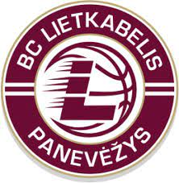

PANEVĖŽIO "LIETKABELIS"

Įkūrimo metai - 1964 m.
Komandos sąrašas
Vyriausias komandos treneris
NENAD ČANAK
Komandos žaidėjai
- Tadas Vaičiūnas
- Nikola Radičevič
- Panagiotis Kalaitzakis
- Karolis Giedraitis
- Vytenis Lipkevičius
- Gabrielius Maldūnas
- Kristupas Žemaitis
- Kaspars Berzins
- Gediminas Orelik
- Grantas Vasiliauskas
- Dovydas Giedraitis
- Dorde Gagič
Daugiau informacijos apie komandą čia
<Grįšti į komandų sąrašą